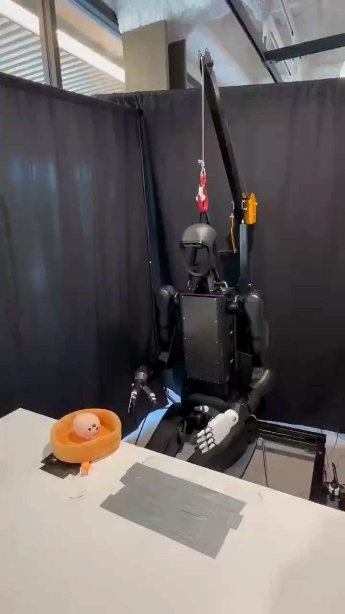

Humanoid Everyday · human-robot-1__hand_over_emotional_support_dumpling
Hand over emotional support dumpling

Visual review action_review.json
{
"prompt_protocol": "humanoid_action_v1",
"prompt_provenance": "visually_authored_from_video_and_initial_frame",
"reviewed_contact_sheets": [
"sheet_001.jpg",
"sheet_002.jpg",
"sheet_003.jpg",
"sheet_004.jpg"
],
"inspected_frame_stride": 2,
"inspected_sampled_frame_count": 197,
"initial_scene": "Front-facing seated humanoid behind a table. A small pale dumpling-shaped plush with a face rests inside an orange soft bowl at the robot's right side; the right hand is free and the left hand rests over the lap.",
"observed_sequence": [
{
"start_frame": 0,
"end_frame": 15,
"action": "Robot holds its initial seated posture with both hands low; dumpling plush remains in orange bowl.",
"confidence": "high"
},
{
"start_frame": 16,
"end_frame": 59,
"action": "Anatomical right arm reaches outward and down toward the dumpling plush in the orange bowl. Left hand stays at lap.",
"confidence": "high"
},
{
"start_frame": 60,
"end_frame": 151,
"action": "Right fingers settle around the plush and close, with adjustments while it remains in the bowl. Native frames 60, 100 and 152 show finger contact and grasp formation.",
"confidence": "high"
},
{
"start_frame": 152,
"end_frame": 189,
"action": "Right hand lifts the plush out of the bowl and holds it suspended forward and to the robot's right. The orange bowl stays on the table.",
"confidence": "high"
},
{
"start_frame": 190,
"end_frame": 225,
"action": "A person extends a palm-up hand from the foreground while robot maintains its grasp on the suspended plush.",
"confidence": "high"
},
{
"start_frame": 226,
"end_frame": 295,
"action": "Robot brings the plush forward and down toward the waiting palm, maintaining its right-hand grasp as the person raises and positions the receiving hand beneath it.",
"confidence": "high"
},
{
"start_frame": 296,
"end_frame": 315,
"action": "Plush settles into the person's hand; robot opens its right fingers to relinquish it. Person closes the receiving fingers around the plush and begins moving it away. Native frame 300 shows shared contact and frame 316 shows separation.",
"confidence": "high"
},
{
"start_frame": 316,
"end_frame": 335,
"action": "Person withdraws the plush toward foreground left and out of view; robot's now-empty right hand lifts away.",
"confidence": "high"
},
{
"start_frame": 336,
"end_frame": 393,
"action": "Robot retracts and lowers the empty right arm toward its lap. Left hand remains at lap and bowl is empty at final frame.",
"confidence": "high"
}
],
"arm_hand_roles": {
"right": "Active throughout: reaches to bowl, grasps and lifts plush, carries it to the person's receiving palm, opens fingers for release, retracts empty hand.",
"left": "Inactive in the manipulation: remains open near the lap and provides no visible support, transfer, or bowl stabilization.",
"person": "Extends a palm-up receiving hand beneath the plush, supports it as robot opens fingers, then carries it away.",
"coordination": "One robot hand and the person's hand overlap in contact at transfer; robot lowers plush onto palm before opening fingers. No robot hand-to-hand transfer."
},
"anatomical_side_evidence": {
"confidence": "high",
"evidence": "Initial native PNG shows the front face, chest panel and both shoulder attachments. The reaching arm is continuously attached to the shoulder on the viewer's left of the front-facing chest, establishing anatomical right. The hand remaining at the lap attaches to the opposite shoulder and is anatomical left. Arm identity is followed continuously through all sheets and native transition views.",
"uncertainty": null
},
"evidence_frame_indices": [
0,
60,
100,
152,
164,
190,
226,
246,
274,
300,
316,
320,
324,
330,
393
],
"inspection_coverage": {
"source_frame_interval_inclusive": [
0,
393
],
"sampled_frames": "Every second decoded frame, 0 through 392; all four contact sheets visually inspected.",
"native_transition_frames": [
0,
60,
100,
152,
164,
190,
226,
246,
274,
300,
316,
320,
324,
330,
393
],
"source_initial_png_viewed_at_native_resolution": true,
"final_frame_viewed_at_native_resolution": true
},
"point_of_transfer": "Native frame 300 shows robot fingers and person supporting the plush together; native frame 316 shows plush solely in the person's hand and clear of the open robot hand.",
"outcome": "Successful visible object handover to a person; plush is carried out of view in the receiving hand.",
"uncertainties": [
"The source annotation's claim about human-aware motion planning describes an internal control property that cannot be established from the visible video; the prompt describes only the observed transfer."
],
"annotation_discrepancies": [],
"selected_execution_status": "success",
"terminal_state": "Person has taken the plush out of view; orange bowl remains empty on the table. Robot's empty right hand is lowered beside its lap and left hand remains at lap. No dropped object is visible.",
"video_id": "human-robot-1",
"dataset": "Humanoid_Everyday",
"dedicated_review_agent": "review_he_human_robot_1",
"review_source_video": "Humanoid_Everyday/human-robot-1__hand_over_emotional_support_dumpling/third_person/original/original.mp4",
"source_frame_count": 394,
"source_fps": 29.924050632911392,
"native_detail_frames": [
0,
60,
100,
152,
164,
190,
226,
246,
274,
300,
316,
320,
324,
330,
393
],
"world_model_prompt": "The robot grasps the dumpling plush in the orange bowl with its right hand and lifts it clear of the bowl. It carries the plush toward a person's outstretched palm, lowers it into the palm, and opens its fingers so the person can take it away. The robot then retracts its empty right hand toward its lap. Keep the camera fixed; preserve robot geometry, physically valid joint motion, and normal gripper opening and closing.",
"original_task_instruction": "Picking up an emotional support dumpling plush and handing it to a person, demonstrating safe object transfer and human-aware motion planning.",
"selected_segment": {
"start_frame": 0,
"end_frame_exclusive": 394,
"reason": "Complete original single-task reference; no cropping or trimming requested."
},
"source_video_sha256": "bb3e205f47c27d5a7bafa496e92b854b950e91dd95b98d0834e65e21d5a3b9a0",
"review_completed_at": "2026-10-13T17:22:19.514500+00:00"
}